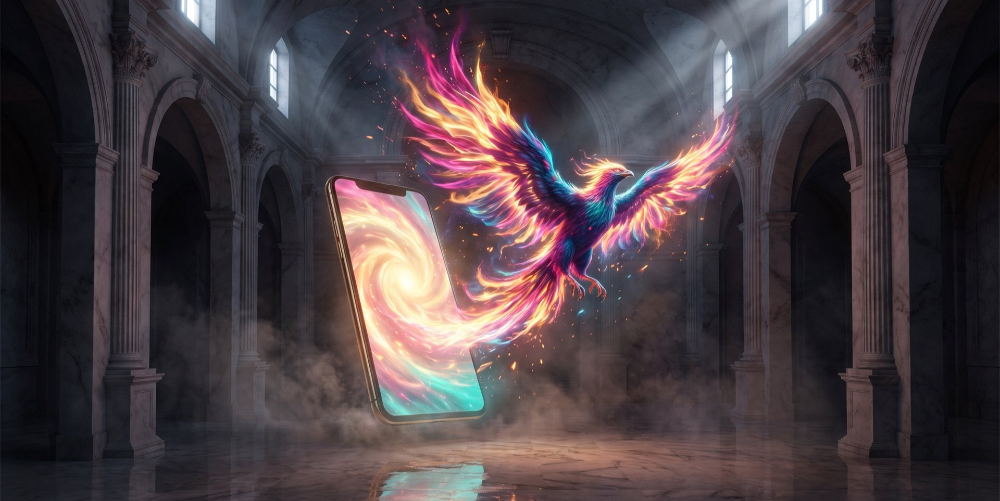
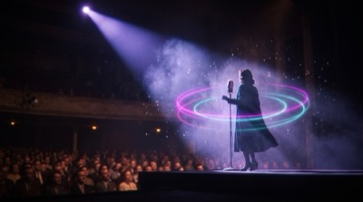
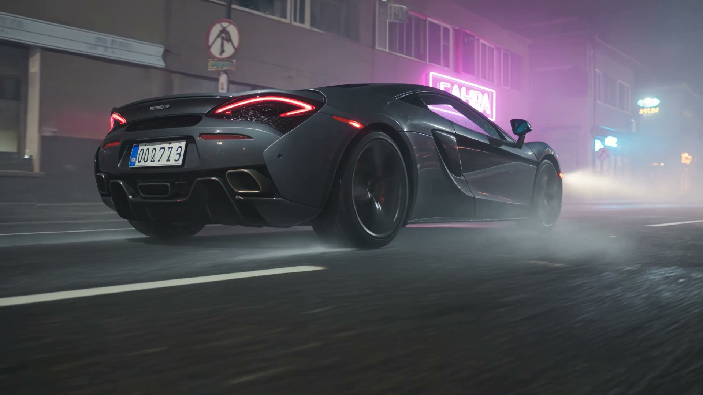
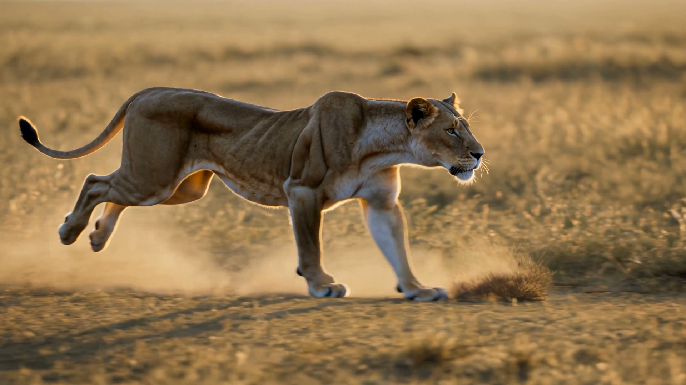
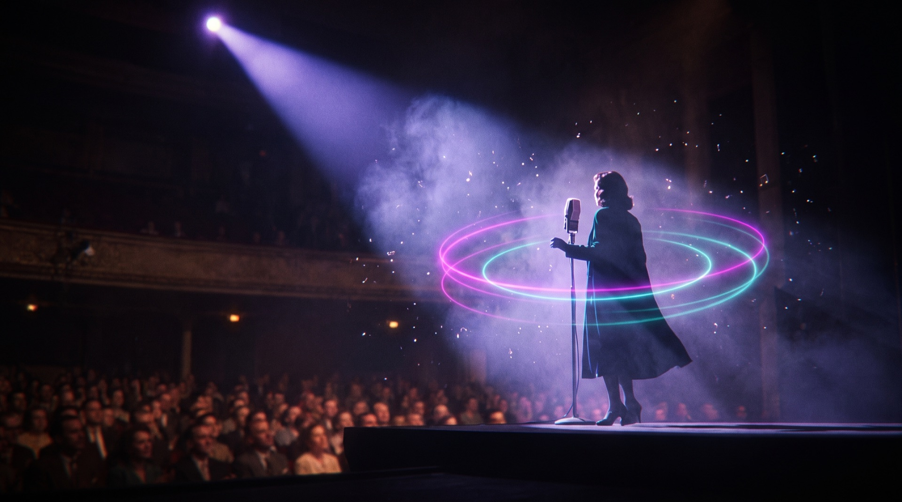

Üretken YZ
İlk Çağ'dan Üretken Zekâya
Fikrin var. Bu 5 saatin sonunda fikrin değil, filmin olacak.
Sahne 01 · Aksiyon
Bu fırtınayı çekmek için
bir cümle yeterdi.
Gemi, okyanus, şimşek, set ve milyonluk bütçe — hepsi tek bir prompt satırında. Bugün merakını senaryoya, senaryonu görsele, görselini sese ve filme dönüştürüyorsun — adım adım, birlikte.
Program · 5 Saat
Beş tablet.
Beş dönüşüm.
 01
01Giriş ve Araçlar
60 dk
 02
02Senaryo & Prompt
60 dk
 03
03Görsel Üretimi
60 dk

04Ses Üretimi
60 dk
05Video & Kurgu
60 dk

Sahne 02 · Yönetmen
Her tür senin setin:
bilim kurgudan belgesele.
Neon şehir, çöl macerası, romantik komedi — kamera, ışık, oyuncu ve mekân artık prompt satırında. Sinema kamera tekniklerini (close-up, golden hour, push-in…) öğrenip kendi sahnelerini yönetiyorsun.

Sahne 03 · Hiperrealizm
Bu bir kamera değil.
Bu bir cümle.
4K, ağır çekim, altın saat, tozu savrulan pençeler — safari ekibi yok, dron yok. Eğitimde bu gerçeklikte sahneleri kendi promptlarınla üretiyorsun.

Sahne 04 · Ses
Sahne ışığı sende.
Ses de senin.
Sesini klonluyor, çok dilli konuşturuyor, filminin anlatıcısı yapıyorsun. İstersen şarkı söyletiyorsun. Mikrofon yok — sadece sen ve yapay zekâ.
Günün Çıktısı
Eğitimden bu videoyla çıkıyorsun.
Sunum dosyası değil, "not aldım" değil — senin yazdığın, seslendirdiğin ve kurguladığın 1.5 dakikalık profesyonel dikey video. Reels'e, tanıtıma, portfolyona hazır.
Yolculuk Devam Ediyor
Gün 2: Vibe Coding — Agora'dan Agent'a →
Bugün üretmeyi öğrendin. Yarın, senin için üreten dijital ekibini kuruyorsun.